Toy Set
examples_updated.RmdOverview
This vignette demonstrates how to use the PathwayEmbed package to
compute and visualize pathway activation using single-cell
transcriptomic data. We use the example dataset
synthetic_test_object_100 included with the package.
Load Packages and Data
library(PathwayEmbed)
library(Seurat)
library(dplyr)
library(tidyr)
library(ggplot2)
library(ggridges)
library(patchwork)
library(pheatmap)
library(progeny)
library(pROC)
data("synthetic_test_object_100")
data("synthetic_test_metadata")Helper: Annotation Label Builder
make_label <- function(stats, group1, group2) {
d <- round(stats$cohens_d[1], 3)
p <- formatC(stats$p_value[1], format = "e", digits = 2)
on1 <- stats$percentage_on[stats$group == group1]
off1 <- stats$percentage_off[stats$group == group1]
on2 <- stats$percentage_on[stats$group == group2]
off2 <- stats$percentage_off[stats$group == group2]
paste0(
group1, ": ON=", on1, "%, OFF=", off1, "%\n",
group2, ": ON=", on2, "%, OFF=", off2, "%\n",
"Cohen's d = ", d, "\n",
"p = ", p
)
}Load Pathway Databases
ListPathway()
#> # A tibble: 17 × 8
#> Pathway Sheet.Name GEO.Accession Condition Cell.Source Species No..Genes
#> <chr> <chr> <chr> <chr> <chr> <chr> <dbl>
#> 1 HIF1A Hypoxia_6hr GSE227502 Hypoxia … Primary hu… Human 21
#> 2 HIF1A Hypoxia_24hr GSE227502 Hypoxia … Primary hu… Human 18
#> 3 HIF1A Hypoxia_5Day GSE227502 Hypoxia … Primary hu… Human 10
#> 4 HIPPO HIPPO_heat GSE133251 Heat str… B16-OVA me… Mouse 40
#> 5 NOTCH NOTCH_JAG1 GSE223735 rJAG1 li… Mouse embr… Mouse 5
#> 6 NOTCH NOTCH_CB103_IN… GSE221577 CB-103 N… RPMI-8402 … Human 46
#> 7 NOTCH NOTCH_LY_INHIB… GSE221577 LY411575… RPMI-8402 … Human 46
#> 8 NOTCH NOTCH_JAG1_2H GSE235637 JAG1 sti… SVG-A cells Human 11
#> 9 NOTCH NOTCH_JAG1_4H GSE235637 JAG1 sti… SVG-A cells Human 11
#> 10 NOTCH NOTCH_JAG1_24H GSE235637 JAG1 sti… SVG-A cells Human 11
#> 11 TGFB TGFB_Human_D1 GSE110021 TGF-β1 t… WI-38 fibr… Human 35
#> 12 TGFB TGFB_Human_D20 GSE110021 TGF-β1 t… WI-38 fibr… Human 39
#> 13 TGFB TGFB_Mouse GSE246932 TGF-β1 t… T Cells Mouse 9
#> 14 WNT WNT3A_12H_ACTI… GSE103175 WNT3A tr… Human Embr… Human 90
#> 15 WNT WNT3A_24H_ACTI… GSE103175 WNT3A tr… Human Embr… Human 88
#> 16 WNT WNT3A_48H_ACTI… GSE103175 WNT3A tr… Human Embr… Human 90
#> 17 WNT WNT3A_SLOPE_AC… GSE103175 WNT3A tr… Human Embr… Human 90
#> # ℹ 1 more variable: Notes <chr>
ListPathway("Pathway")
#> [1] "HIF1A" "HIPPO" "NOTCH" "TGFB" "WNT"
ListPathway("WNT")
#> # A tibble: 4 × 8
#> Pathway Sheet.Name GEO.Accession Condition Cell.Source Species No..Genes Notes
#> <chr> <chr> <chr> <chr> <chr> <chr> <dbl> <chr>
#> 1 WNT WNT3A_12H… GSE103175 WNT3A tr… Human Embr… Human 90 NA
#> 2 WNT WNT3A_24H… GSE103175 WNT3A tr… Human Embr… Human 88 NA
#> 3 WNT WNT3A_48H… GSE103175 WNT3A tr… Human Embr… Human 90 NA
#> 4 WNT WNT3A_SLO… GSE103175 WNT3A tr… Human Embr… Human 90 NA
Wnt_12h <- LoadPathway("WNT3A_12H_ACTIVATION", "mouse")
Wnt_24h <- LoadPathway("WNT3A_24H_ACTIVATION", "mouse")
Wnt_48h <- LoadPathway("WNT3A_48H_ACTIVATION", "mouse")
Wnt_slope <- LoadPathway("WNT3A_SLOPE_ACTIVATION", "mouse")Preprocessing and Pathway Reference States
matrix_12h <- DataPreProcess(synthetic_test_object_100, Wnt_12h, Seurat.object = TRUE)
matrix_24h <- DataPreProcess(synthetic_test_object_100, Wnt_24h, Seurat.object = TRUE)
matrix_48h <- DataPreProcess(synthetic_test_object_100, Wnt_48h, Seurat.object = TRUE)
matrix_slope <- DataPreProcess(synthetic_test_object_100, Wnt_slope, Seurat.object = TRUE)
pathwaystat_12h <- PathwayMaxMin(matrix_12h, Wnt_12h)
pathwaystat_24h <- PathwayMaxMin(matrix_24h, Wnt_24h)
pathwaystat_48h <- PathwayMaxMin(matrix_48h, Wnt_48h)
pathwaystat_slope <- PathwayMaxMin(matrix_slope, Wnt_slope)Compute Pathway Scores
score_12h <- ComputeCellData(matrix_12h, pathwaystat_12h)
score_24h <- ComputeCellData(matrix_24h, pathwaystat_24h)
score_48h <- ComputeCellData(matrix_48h, pathwaystat_48h)
score_slope <- ComputeCellData(matrix_slope, pathwaystat_slope)Prepare Plot Data and Calculate Group Statistics
plot_data_12h <- PreparePlotData(synthetic_test_metadata, score_12h, group = "genotype")
plot_data_24h <- PreparePlotData(synthetic_test_metadata, score_24h, group = "genotype")
plot_data_48h <- PreparePlotData(synthetic_test_metadata, score_48h, group = "genotype")
plot_data_slope <- PreparePlotData(synthetic_test_metadata, score_slope, group = "genotype")
pct_12h <- CalculatePercentage(to.plot = plot_data_12h, group_var = "genotype")
pct_24h <- CalculatePercentage(to.plot = plot_data_24h, group_var = "genotype")
pct_48h <- CalculatePercentage(to.plot = plot_data_48h, group_var = "genotype")
pct_slope <- CalculatePercentage(to.plot = plot_data_slope, group_var = "genotype")
pct_12h; pct_24h; pct_48h; pct_slope
#> # A tibble: 2 × 5
#> group percentage_on percentage_off cohens_d p_value
#> <chr> <dbl> <dbl> <dbl> <dbl>
#> 1 WT 41.5 58.5 -0.431 5.08e-25
#> 2 Mutant 61.7 38.3 -0.431 5.08e-25
#> # A tibble: 2 × 5
#> group percentage_on percentage_off cohens_d p_value
#> <chr> <dbl> <dbl> <dbl> <dbl>
#> 1 WT 40.3 59.7 -0.379 2.48e-20
#> 2 Mutant 58.7 41.3 -0.379 2.48e-20
#> # A tibble: 2 × 5
#> group percentage_on percentage_off cohens_d p_value
#> <chr> <dbl> <dbl> <dbl> <dbl>
#> 1 WT 46 54 -0.187 0.00000376
#> 2 Mutant 53.9 46.1 -0.187 0.00000376
#> # A tibble: 2 × 5
#> group percentage_on percentage_off cohens_d p_value
#> <chr> <dbl> <dbl> <dbl> <dbl>
#> 1 WT 45.2 54.8 -0.149 0.000119
#> 2 Mutant 52 48 -0.149 0.000119Visualization 1 — Density Plots
p1 <- PlotPathway(plot_data_12h, "12hr Wnt", "genotype", c("#ae282c", "#2066a8")) +
annotate("text", x = Inf, y = Inf, hjust = 1.1, vjust = 1.5,
label = make_label(pct_12h, "WT", "Mutant"), size = 3.5, color = "black")
p2 <- PlotPathway(plot_data_24h, "24hr Wnt", "genotype", c("#ae282c", "#2066a8")) +
annotate("text", x = Inf, y = Inf, hjust = 1.1, vjust = 1.5,
label = make_label(pct_24h, "WT", "Mutant"), size = 3.5, color = "black")
p3 <- PlotPathway(plot_data_48h, "48hr Wnt", "genotype", c("#ae282c", "#2066a8")) +
annotate("text", x = Inf, y = Inf, hjust = 1.1, vjust = 1.5,
label = make_label(pct_48h, "WT", "Mutant"), size = 3.5, color = "black")
p4 <- PlotPathway(plot_data_slope, "Wnt (slope)", "genotype", c("#ae282c", "#2066a8")) +
annotate("text", x = Inf, y = Inf, hjust = 1.1, vjust = 1.5,
label = make_label(pct_slope, "WT", "Mutant"), size = 3.5, color = "black")
p1; p2; p3; p4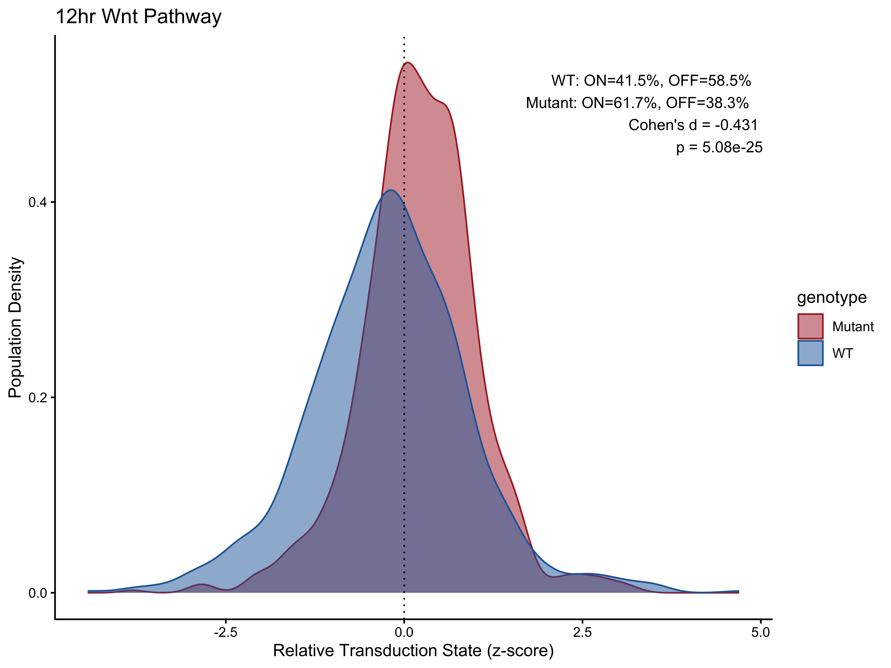
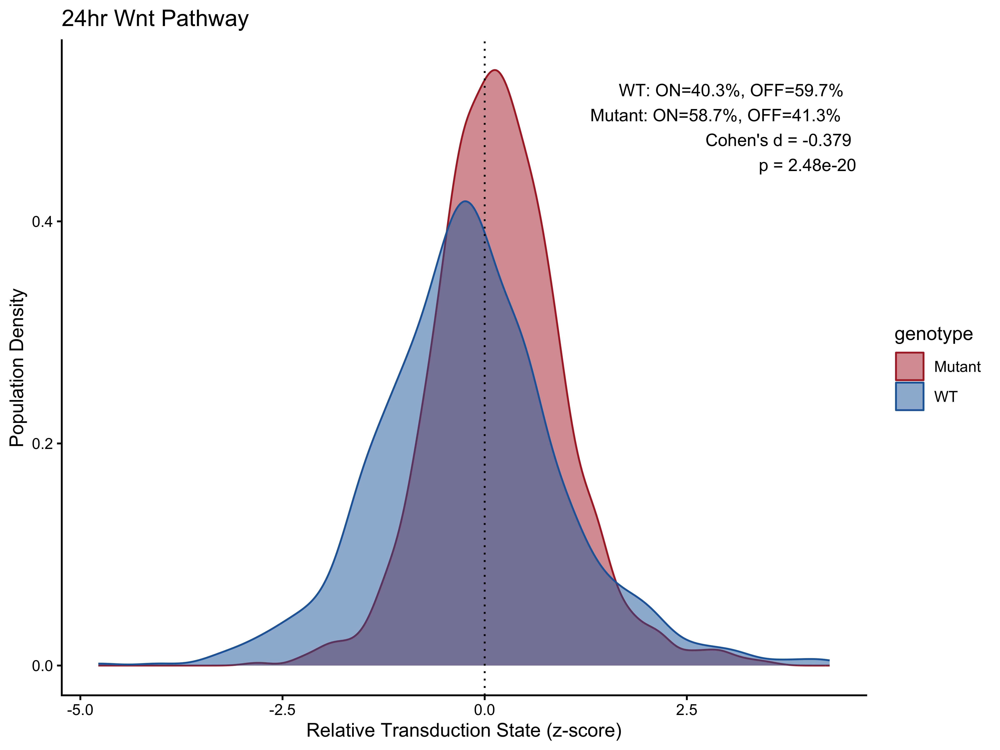
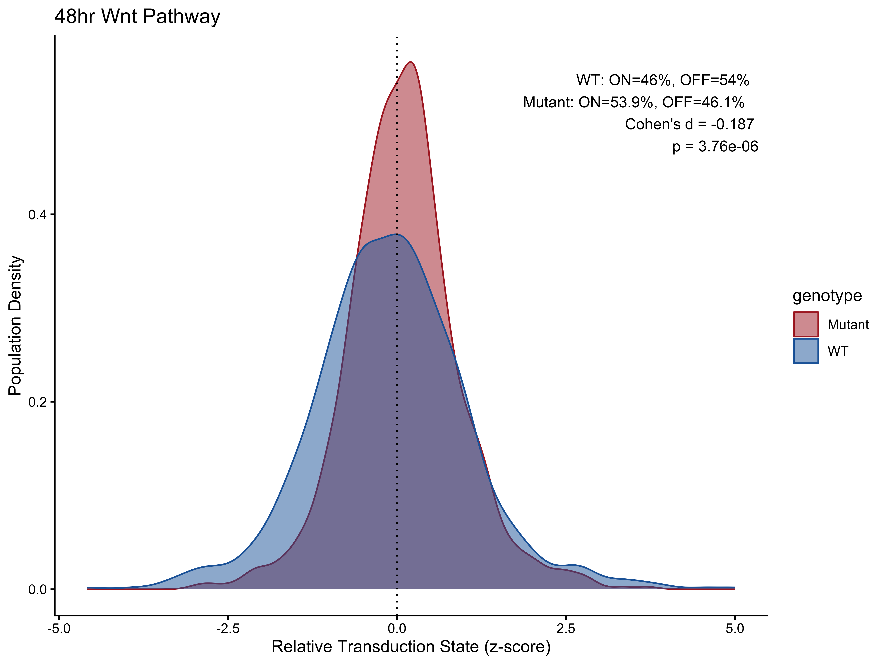
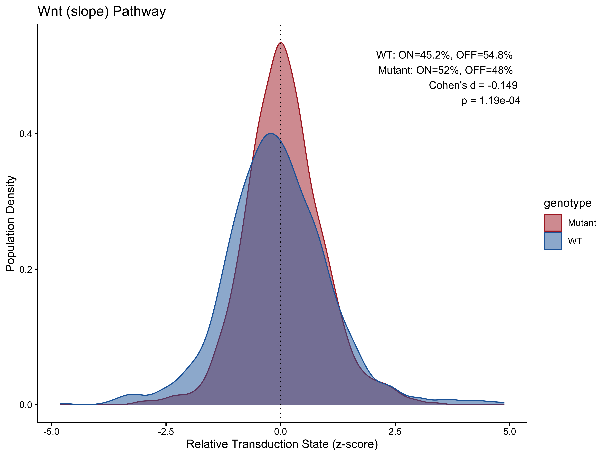
Visualization 2 — Violin + Jitter Plot
p5 <- ggplot(plot_data_12h,
aes(x = genotype, y = scale, fill = genotype, color = genotype)) +
geom_violin(alpha = 0.5, trim = FALSE) +
geom_jitter(width = 0.15, size = 0.6, alpha = 0.3) +
geom_hline(yintercept = 0, linetype = "dotted", color = "black", linewidth = 0.5) +
scale_fill_manual(values = c("#ae282c", "#2066a8")) +
scale_color_manual(values = c("#ae282c", "#2066a8")) +
annotate("text", x = Inf, y = Inf, hjust = 1.1, vjust = 1.5,
label = make_label(pct_12h, "WT", "Mutant"), size = 3.5, color = "black") +
labs(title = "12hr WNT Pathway Activation",
x = NULL, y = "Relative Transduction State (z-score)") +
theme_classic() +
theme(legend.position = "none")
p5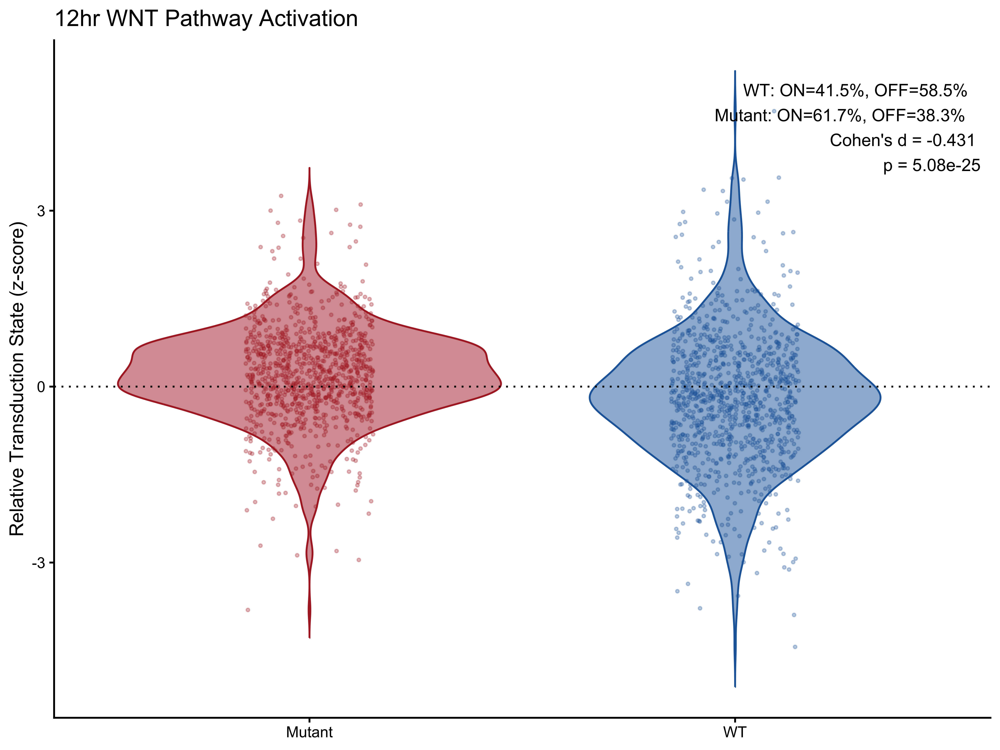
Visualization 3 — Waterfall Plot
waterfall_data <- plot_data_12h %>%
group_by(genotype) %>%
arrange(scale, .by_group = TRUE) %>%
mutate(rank = row_number(),
state = ifelse(scale >= 0, "ON", "OFF")) %>%
ungroup()
annotation_df <- pct_12h %>%
mutate(
label = paste0("Cohen's d = ", round(cohens_d, 3), "\n",
"p = ", formatC(p_value, format = "e", digits = 2), "\n",
"ON = ", percentage_on, "%\n",
"OFF = ", percentage_off, "%"),
genotype = group
)
p6 <- ggplot(waterfall_data, aes(x = rank, y = scale, fill = state)) +
geom_bar(stat = "identity", width = 1) +
facet_wrap(~ genotype, scales = "free_x") +
scale_fill_manual(values = c("ON" = "#ae282c", "OFF" = "#2066a8")) +
geom_hline(yintercept = 0, color = "black", linewidth = 0.4) +
geom_text(data = annotation_df,
aes(x = Inf, y = Inf, label = label),
hjust = 1.1, vjust = 1.5, size = 3, color = "black",
inherit.aes = FALSE) +
labs(title = "Waterfall Plot of Cell Activation",
x = "Cells (ranked by activation)",
y = "Relative Transduction State (z-score)",
fill = "State") +
theme_classic() +
theme(axis.text.x = element_blank(), axis.ticks.x = element_blank(),
strip.background = element_rect(fill = "grey90", color = NA))
p6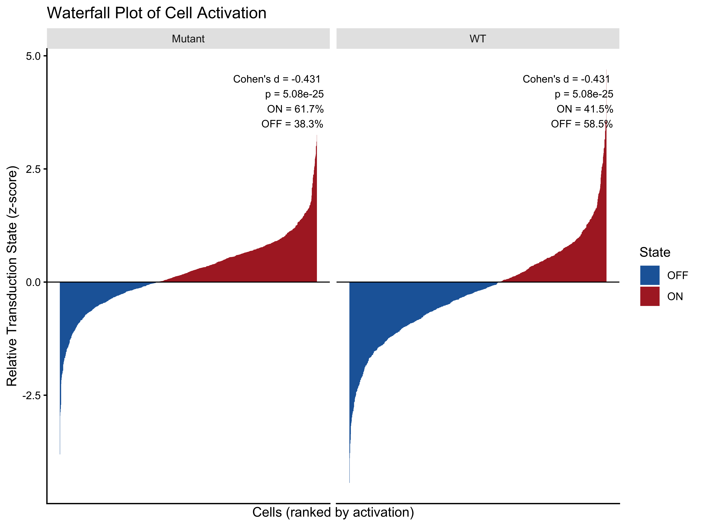
Customize Pathway Input
# Customize the wnt pathway using coefficients defined by us
Wnt.molecules <- c('Lgr5','Rnf43','Lrp5',
'Lrp6','Fzd6','Ctnnb1',
'Gsk3b','Ccnd1','Axin2',
'Myc','Lef1','Tcf7',
'Tcf7l1','Tcf7l2','Tle1',
'Apc','Csnk1a1','Dvl1')
Wnt.cof <- c(1,1,-1,-1,-1,-1, 1,1,1, 1,1,1, 1,1,1, -1,-1,-1)
Wnt_df <- data.frame(
Gene_Symbol = Wnt.molecules,
Coefficient = Wnt.cof)
print(Wnt_df)
#> Gene_Symbol Coefficient
#> 1 Lgr5 1
#> 2 Rnf43 1
#> 3 Lrp5 -1
#> 4 Lrp6 -1
#> 5 Fzd6 -1
#> 6 Ctnnb1 -1
#> 7 Gsk3b 1
#> 8 Ccnd1 1
#> 9 Axin2 1
#> 10 Myc 1
#> 11 Lef1 1
#> 12 Tcf7 1
#> 13 Tcf7l1 1
#> 14 Tcf7l2 1
#> 15 Tle1 1
#> 16 Apc -1
#> 17 Csnk1a1 -1
#> 18 Dvl1 -1
# Calculate score using customized pathway data
matrix_df <- DataPreProcess(synthetic_test_object_100, Wnt_df, Seurat.object = TRUE)
pathwaystat_df <- PathwayMaxMin(matrix_df, Wnt_df)
score_df <- ComputeCellData(matrix_df, pathwaystat_df)
plot_data_df <- PreparePlotData(synthetic_test_metadata, score_df, group = "genotype")
pct_df <- CalculatePercentage(to.plot = plot_data_df, group_var = "genotype")
PlotPathway(plot_data_df, "Customized Wnt", "genotype", c("#ae282c", "#2066a8")) +
annotate("text", x = Inf, y = Inf, hjust = 1.1, vjust = 1.5,
label = make_label(pct_df, "WT", "Mutant"), size = 3.5, color = "black")
Null Distribution — Random Gene Sets
set.seed(123)
real_n_genes <- nrow(matrix_12h)
real_cohens_d <- pct_12h$cohens_d[1]
n_reps <- 20
# Sparse size grid covering the relevant range, always including real n
size_grid <- sort(unique(c(
seq(5, 50, by = 5),
seq(60, 200, by = 20),
real_n_genes
)))
all_genes_pool <- rownames(
GetAssayData(synthetic_test_object_100, assay = "RNA", layer = "data")
)
size_grid <- size_grid[size_grid <= length(all_genes_pool)]
cohens_d_random <- data.frame()
for (i in size_grid) {
for (rep in seq_len(n_reps)) {
sampled_genes <- sample(all_genes_pool, i)
fake_pathway <- data.frame(
Gene_Symbol = sampled_genes,
Coefficient = sample(c(-1L, 1L), i, replace = TRUE)
)
expr_matrix <- DataPreProcess(synthetic_test_object_100, fake_pathway,
Seurat.object = TRUE)
pathwaystat_rand <- PathwayMaxMin(expr_matrix, fake_pathway)
score_rand <- ComputeCellData(expr_matrix, pathwaystat_rand)
plot_data_rand <- PreparePlotData(synthetic_test_metadata, score_rand,
group = "genotype")
outcome_rand <- CalculatePercentage(plot_data_rand, group_var = "genotype")
cohens_d_random <- rbind(cohens_d_random, data.frame(
n_genes = i,
rep = rep,
cohens_d = outcome_rand$cohens_d[1]
))
}
}
cohens_d_summary_rand <- cohens_d_random %>%
group_by(n_genes) %>%
summarise(mean_d = mean(cohens_d, na.rm = TRUE),
sd_d = sd(cohens_d, na.rm = TRUE),
.groups = "drop")
null_at_real_n <- cohens_d_random %>% filter(n_genes == real_n_genes)
emp_p <- mean(abs(null_at_real_n$cohens_d) >= abs(real_cohens_d), na.rm = TRUE)
cat("Real pathway Cohen's d: ", round(real_cohens_d, 3), "\n")
#> Real pathway Cohen's d: -0.431
cat("Null mean at same n genes: ", round(mean(null_at_real_n$cohens_d, na.rm = TRUE), 3), "\n")
#> Null mean at same n genes: -0.082
cat("Null SD at same n genes: ", round(sd(null_at_real_n$cohens_d, na.rm = TRUE), 3), "\n")
#> Null SD at same n genes: 0.328
cat("Empirical p-value: ", round(emp_p, 3), "\n")
#> Empirical p-value: 0.25
p7 <- ggplot() +
geom_hline(yintercept = 0, linetype = "solid", color = "#888780", linewidth = 0.4) +
geom_hline(yintercept = 0.8, linetype = "dashed", color = "#E24B4A", linewidth = 0.5) +
geom_hline(yintercept = -0.8, linetype = "dashed", color = "#E24B4A", linewidth = 0.5) +
geom_hline(yintercept = 0.5, linetype = "dashed", color = "#EF9F27", linewidth = 0.5) +
geom_hline(yintercept = -0.5, linetype = "dashed", color = "#EF9F27", linewidth = 0.5) +
geom_point(data = cohens_d_random,
aes(x = n_genes, y = cohens_d),
color = "#534AB7", alpha = 0.25, size = 1.2) +
geom_ribbon(data = cohens_d_summary_rand,
aes(x = n_genes, ymin = mean_d - sd_d, ymax = mean_d + sd_d),
fill = "#534AB7", alpha = 0.15) +
geom_line(data = cohens_d_summary_rand,
aes(x = n_genes, y = mean_d),
color = "#534AB7", linewidth = 0.9) +
geom_point(aes(x = real_n_genes, y = real_cohens_d),
color = "#E24B4A", size = 3, shape = 18) +
geom_vline(xintercept = real_n_genes, color = "#E24B4A",
linetype = "dashed", linewidth = 0.5) +
annotate("text", x = real_n_genes, y = Inf,
label = paste0("Real pathway\nn = ", real_n_genes,
"\nd = ", round(real_cohens_d, 3),
"\nemp. p = ", round(emp_p, 3)),
hjust = -0.1, vjust = 1.5, size = 3, color = "#E24B4A") +
annotate("text", x = max(cohens_d_summary_rand$n_genes), y = 0.82,
label = "large (+0.8)", hjust = 1, size = 3, color = "#E24B4A") +
annotate("text", x = max(cohens_d_summary_rand$n_genes), y = -0.82,
label = "large (-0.8)", hjust = 1, size = 3, color = "#E24B4A") +
annotate("text", x = max(cohens_d_summary_rand$n_genes), y = 0.52,
label = "medium (+0.5)", hjust = 1, size = 3, color = "#EF9F27") +
annotate("text", x = max(cohens_d_summary_rand$n_genes), y = -0.52,
label = "medium (-0.5)", hjust = 1, size = 3, color = "#EF9F27") +
labs(title = "Null Distribution — Cohen's d by Gene Set Size",
x = "Number of genes", y = "Cohen's d") +
theme_minimal()
p7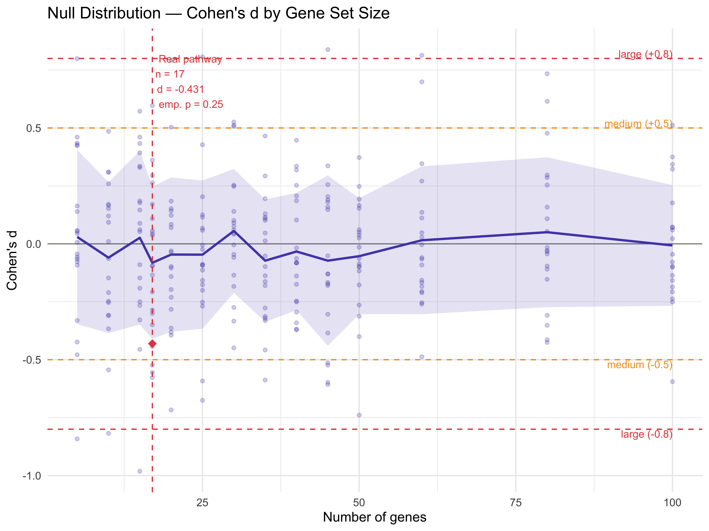
Null Distribution — Within Pathway Gene Pool
set.seed(123)
all_genes <- rownames(matrix_12h)
n_genes <- length(all_genes)
n_reps <- 10
cohens_d_pathway <- data.frame()
for (i in 2:n_genes) {
for (rep in seq_len(n_reps)) {
sampled_genes <- sample(all_genes, i)
expr_matrix <- matrix_12h[sampled_genes, , drop = FALSE]
pathwaystat_rand <- PathwayMaxMin(expr_matrix, Wnt_12h)
score_rand <- ComputeCellData(expr_matrix, pathwaystat_rand)
plot_data_rand <- PreparePlotData(synthetic_test_metadata, score_rand,
group = "genotype")
outcome_rand <- CalculatePercentage(to.plot = plot_data_rand,
group_var = "genotype")
cohens_d_pathway <- rbind(cohens_d_pathway, data.frame(
n_genes = i,
rep = rep,
cohens_d = outcome_rand$cohens_d[1]
))
}
}
cohens_d_summary_pw <- cohens_d_pathway %>%
group_by(n_genes) %>%
summarise(mean_d = mean(cohens_d, na.rm = TRUE),
sd_d = sd(cohens_d, na.rm = TRUE),
.groups = "drop")
null_at_real_n_pw <- cohens_d_pathway %>% filter(n_genes == real_n_genes)
emp_p_pw <- mean(abs(null_at_real_n_pw$cohens_d) >= abs(real_cohens_d), na.rm = TRUE)
cat("Real pathway Cohen's d: ", round(real_cohens_d, 3), "\n")
#> Real pathway Cohen's d: -0.431
cat("Null mean at same n genes: ", round(mean(null_at_real_n_pw$cohens_d, na.rm = TRUE), 3), "\n")
#> Null mean at same n genes: -0.431
cat("Null SD at same n genes: ", round(sd(null_at_real_n_pw$cohens_d, na.rm = TRUE), 3), "\n")
#> Null SD at same n genes: 0
cat("Empirical p-value: ", round(emp_p_pw, 3), "\n")
#> Empirical p-value: 0.6
p_null <- ggplot() +
geom_hline(yintercept = 0, linetype = "solid", color = "#888780", linewidth = 0.4) +
geom_hline(yintercept = 0.8, linetype = "dashed", color = "#E24B4A", linewidth = 0.5) +
geom_hline(yintercept = -0.8, linetype = "dashed", color = "#E24B4A", linewidth = 0.5) +
geom_hline(yintercept = 0.5, linetype = "dashed", color = "#EF9F27", linewidth = 0.5) +
geom_hline(yintercept = -0.5, linetype = "dashed", color = "#EF9F27", linewidth = 0.5) +
geom_point(data = cohens_d_pathway,
aes(x = n_genes, y = cohens_d),
color = "#534AB7", alpha = 0.25, size = 1.2) +
geom_ribbon(data = cohens_d_summary_pw,
aes(x = n_genes, ymin = mean_d - sd_d, ymax = mean_d + sd_d),
fill = "#534AB7", alpha = 0.15) +
geom_line(data = cohens_d_summary_pw,
aes(x = n_genes, y = mean_d),
color = "#534AB7", linewidth = 0.9) +
geom_point(aes(x = real_n_genes, y = real_cohens_d),
color = "#E24B4A", size = 3, shape = 18) +
geom_vline(xintercept = real_n_genes, color = "#E24B4A",
linetype = "dashed", linewidth = 0.5) +
annotate("text", x = real_n_genes, y = Inf,
label = paste0("Real pathway\nn = ", real_n_genes,
"\nd = ", round(real_cohens_d, 3)),
hjust = -0.1, vjust = 1.5, size = 3, color = "#E24B4A") +
labs(title = "Null Distribution — Cohen's d by Gene Set Size (10 reps each)",
x = "Number of genes", y = "Cohen's d") +
theme_minimal()
p_null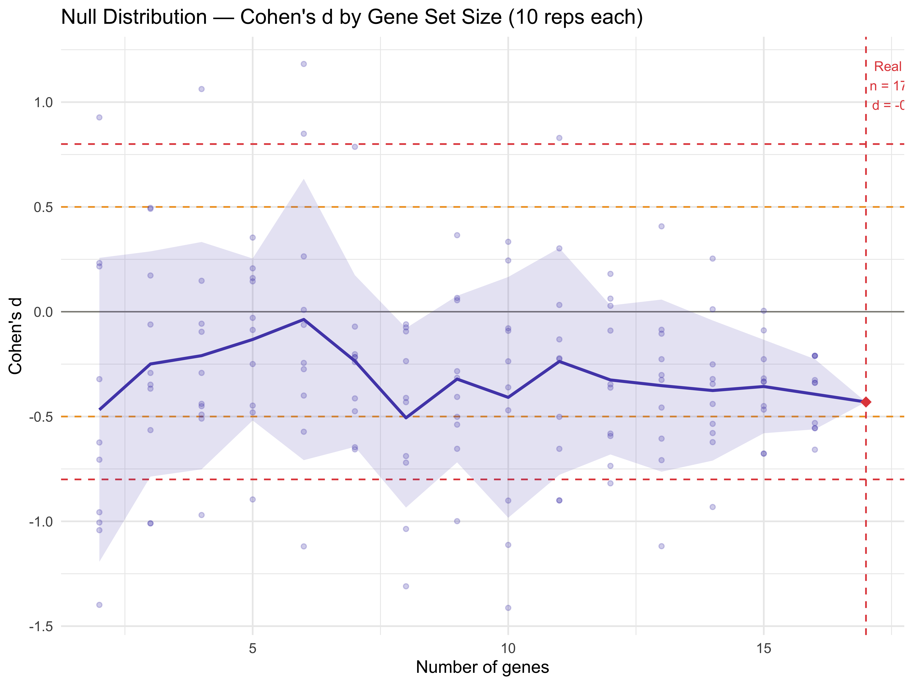
Sensitivity Analysis 1 — Effect of Input Matrix Type
data("synthetic_test_matrix_100")
matrix_raw <- synthetic_test_matrix_100
lib_size <- colSums(synthetic_test_matrix_100)
matrix_lognorm <- log1p(sweep(synthetic_test_matrix_100, 2, lib_size, "/") * 1e4)
matrix_norm <- sweep(synthetic_test_matrix_100, 2, lib_size, "/") * 1e4
gene_var <- apply(matrix_lognorm, 1, var)
hvg_genes <- names(sort(gene_var, decreasing = TRUE))[
1:ceiling(nrow(matrix_lognorm) * 0.5)]
matrix_hvg <- matrix_lognorm[hvg_genes, ]
run_pipeline <- function(expr_mat, pathwaydata, metadata, group,
scale.data = TRUE) {
mat <- DataPreProcess(expr_mat, pathwaydata, scale.data = scale.data)
pstat <- PathwayMaxMin(mat, pathwaydata)
score <- ComputeCellData(mat, pstat)
plotdata <- PreparePlotData(metadata, score, group = group)
outcome <- CalculatePercentage(plotdata, group_var = group)
list(score = score, plotdata = plotdata, outcome = outcome)
}
result_raw <- run_pipeline(matrix_raw, Wnt_12h, synthetic_test_metadata, "genotype")
result_lognorm <- run_pipeline(matrix_lognorm, Wnt_12h, synthetic_test_metadata, "genotype")
result_norm <- run_pipeline(matrix_norm, Wnt_12h, synthetic_test_metadata, "genotype")
result_hvg <- run_pipeline(matrix_hvg, Wnt_12h, synthetic_test_metadata, "genotype")
result_raw_noscale <- run_pipeline(matrix_raw, Wnt_12h, synthetic_test_metadata, "genotype", scale.data = FALSE)
result_lognorm_noscale <- run_pipeline(matrix_lognorm, Wnt_12h, synthetic_test_metadata, "genotype", scale.data = FALSE)
result_norm_noscale <- run_pipeline(matrix_norm, Wnt_12h, synthetic_test_metadata, "genotype", scale.data = FALSE)
result_hvg_noscale <- run_pipeline(matrix_hvg, Wnt_12h, synthetic_test_metadata, "genotype", scale.data = FALSE)
input_labels <- c("Raw", "Log-norm", "Norm", "HVG",
"Raw (noscale)", "Log-norm (noscale)",
"Norm (noscale)", "HVG (noscale)")
results_list <- list(result_raw, result_lognorm, result_norm, result_hvg,
result_raw_noscale, result_lognorm_noscale,
result_norm_noscale, result_hvg_noscale)
cohens_d_input <- data.frame(
input_type = input_labels,
cohens_d = sapply(results_list, function(r) r$outcome$cohens_d[1]),
p_value = sapply(results_list, function(r) r$outcome$p_value[1])
)
print(cohens_d_input)
#> input_type cohens_d p_value
#> 1 Raw -0.80105995 1.120664e-65
#> 2 Log-norm -0.43058889 5.083976e-25
#> 3 Norm -0.38149058 2.648944e-18
#> 4 HVG -0.02940827 5.222419e-01
#> 5 Raw (noscale) -0.99496812 9.932645e-94
#> 6 Log-norm (noscale) -0.22648846 5.743074e-07
#> 7 Norm (noscale) -0.42743835 2.281451e-22
#> 8 HVG (noscale) -0.02943217 5.259599e-01
score_df_sens <- as.data.frame(
setNames(lapply(results_list, function(r) as.numeric(r$score)), input_labels),
row.names = names(results_list[[1]]$score)
)
score_cor <- cor(score_df_sens, method = "spearman", use = "pairwise.complete.obs")
p12 <- pheatmap(score_cor,
color = colorRampPalette(c("#185FA5", "white", "#993C1D"))(100),
breaks = seq(-1, 1, length.out = 101),
display_numbers = TRUE, number_format = "%.2f",
fontsize_number = 9,
main = "Score Correlation Across Input Matrix Types — Spearman")
named_results <- list(Raw = result_raw, `Log-norm` = result_lognorm,
Norm = result_norm, HVG = result_hvg)
density_plots <- lapply(
names(named_results),
function(nm) PlotPathway(named_results[[nm]]$plotdata,
paste("Wnt 12h —", nm), "genotype",
c("#ae282c", "#2066a8"))
)
p13 <- wrap_plots(density_plots, ncol = 2) +
plot_annotation(title = "Pathway Activation by Input Matrix Type")
p12; p13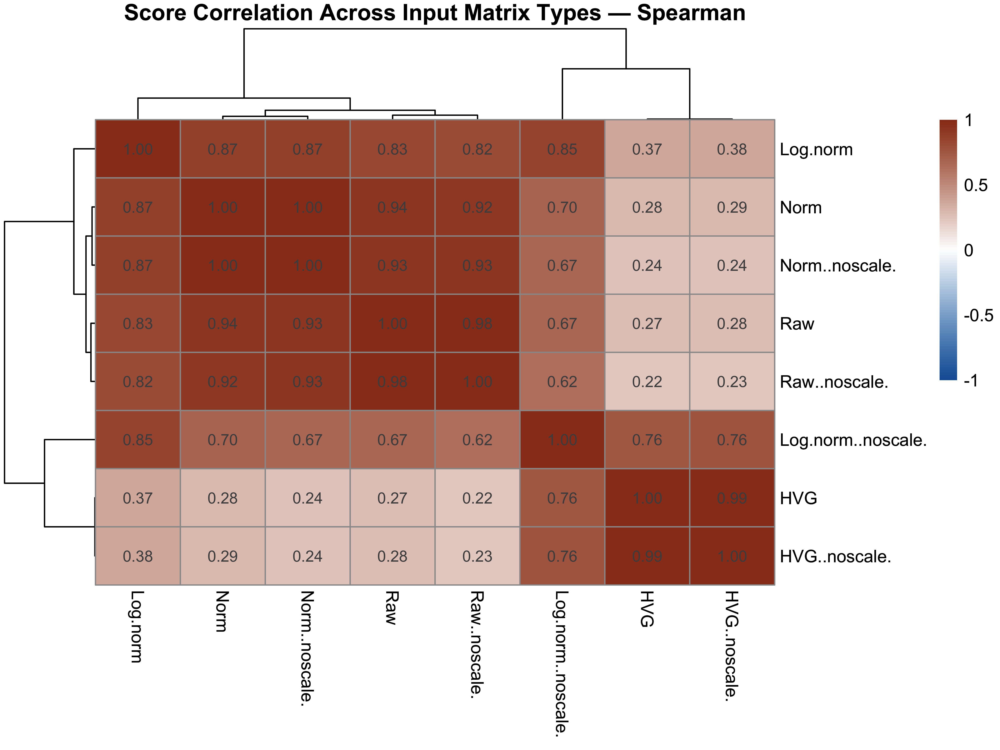
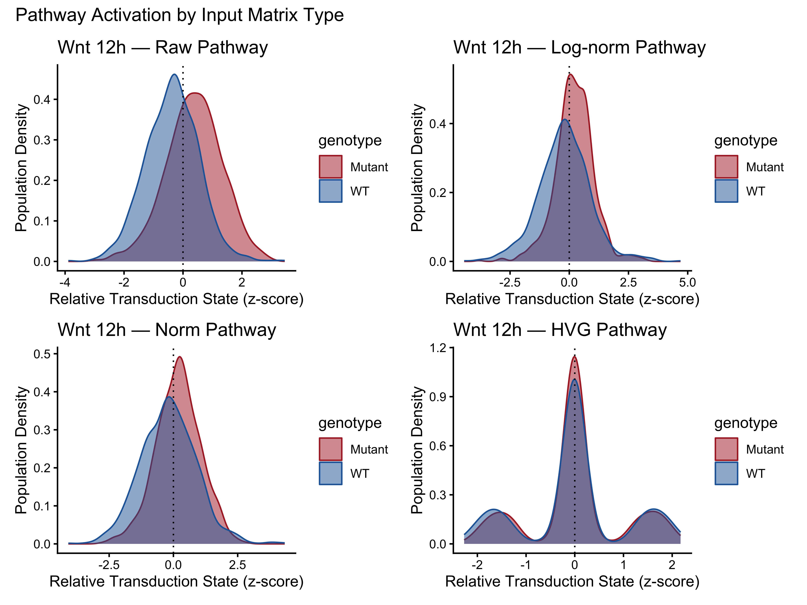
Correlation with Technical Confounders
normalized_mat <- GetAssayData(synthetic_test_object_100, assay = "RNA", layer = "data")
common_genes <- intersect(rownames(normalized_mat), Wnt_12h$Gene_Symbol)
gene_matrix <- as.matrix(normalized_mat[common_genes, ])
mean_expr <- colMeans(gene_matrix, na.rm = TRUE)
zscore_mean_per_cell <- colMeans(t(scale(t(gene_matrix))), na.rm = TRUE)
seurat_meta <- synthetic_test_object_100@meta.data
make_scatter <- function(df, x_col, x_label) {
r <- cor(df$embed_score, df[[x_col]], method = "spearman", use = "complete.obs")
ggplot(df, aes(x = .data[[x_col]], y = embed_score)) +
geom_point(alpha = 0.4, size = 1.2, color = "#534AB7") +
geom_smooth(method = "lm", color = "#E24B4A", linewidth = 0.8, se = TRUE) +
labs(title = sprintf("%s (rho = %.3f)", x_label, r),
x = x_label, y = "PathwayEmbed score") +
theme_minimal()
}
confounder_df_norm <- data.frame(
cell = names(score_12h),
embed_score = as.numeric(score_12h),
mean_expr = mean_expr[names(score_12h)],
zscore_expr = zscore_mean_per_cell[names(score_12h)],
nCount_RNA = seurat_meta[names(score_12h), "nCount_RNA"],
nFeature_RNA = seurat_meta[names(score_12h), "nFeature_RNA"]
)
for (cov in c("mean_expr", "zscore_expr", "nCount_RNA", "nFeature_RNA")) {
r <- cor(confounder_df_norm$embed_score, confounder_df_norm[[cov]],
method = "spearman", use = "complete.obs")
cat(sprintf("Spearman vs %-20s : %.3f\n", cov, r))
}
#> Spearman vs mean_expr : 0.163
#> Spearman vs zscore_expr : 0.280
#> Spearman vs nCount_RNA : 0.089
#> Spearman vs nFeature_RNA : -0.145
p_nor <- (make_scatter(confounder_df_norm, "mean_expr", "Mean expression") +
make_scatter(confounder_df_norm, "zscore_expr", "Z-score mean")) /
(make_scatter(confounder_df_norm, "nCount_RNA", "nCount_RNA") +
make_scatter(confounder_df_norm, "nFeature_RNA", "nFeature_RNA"))
p_nor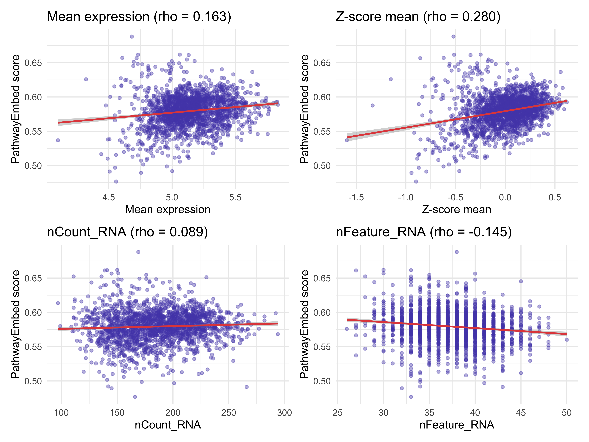
Correlation with Technical Confounders — Raw Counts
common_genes_raw <- intersect(rownames(matrix_raw), Wnt_12h$Gene_Symbol)
gene_matrix_raw <- as.matrix(matrix_raw[common_genes_raw, ])
mean_expr_raw <- colMeans(gene_matrix_raw, na.rm = TRUE)
zscore_mean_per_cell_raw <- colMeans(t(scale(t(gene_matrix_raw))), na.rm = TRUE)
score_raw_12h <- result_raw$score
confounder_df_raw <- data.frame(
cell = names(score_raw_12h),
embed_score = as.numeric(score_raw_12h),
mean_expr = mean_expr_raw[names(score_raw_12h)],
zscore_expr = zscore_mean_per_cell_raw[names(score_raw_12h)],
nCount_RNA = seurat_meta[names(score_raw_12h), "nCount_RNA"],
nFeature_RNA = seurat_meta[names(score_raw_12h), "nFeature_RNA"]
)
for (cov in c("mean_expr", "zscore_expr", "nCount_RNA", "nFeature_RNA")) {
r <- cor(confounder_df_raw$embed_score, confounder_df_raw[[cov]],
method = "spearman", use = "complete.obs")
cat(sprintf("Spearman vs %-20s : %.3f\n", cov, r))
}
#> Spearman vs mean_expr : 0.411
#> Spearman vs zscore_expr : 0.406
#> Spearman vs nCount_RNA : 0.335
#> Spearman vs nFeature_RNA : -0.024
p_raw <- (make_scatter(confounder_df_raw, "mean_expr", "Mean expression") +
make_scatter(confounder_df_raw, "zscore_expr", "Z-score mean")) /
(make_scatter(confounder_df_raw, "nCount_RNA", "nCount_RNA") +
make_scatter(confounder_df_raw, "nFeature_RNA", "nFeature_RNA"))
p_raw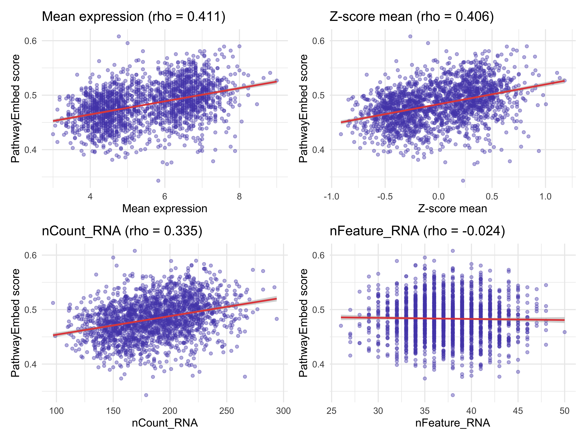
Benchmark Against PROGENy and AddModuleScore
normalized_mat_dense <- as.matrix(normalized_mat)
progeny_scores <- progeny(
normalized_mat_dense,
scale = TRUE,
organism = "Mouse",
top = 100,
perm = 1
)
progeny_wnt <- setNames(as.numeric(progeny_scores[, "WNT"]),
rownames(progeny_scores))
wnt_features <- rownames(matrix_24h)
synthetic_test_object_100 <- AddModuleScore(
object = synthetic_test_object_100,
features = list(wnt_features),
name = "WNT_ModuleScore",
ctrl = 5,
nbin = 10
)
module_score <- setNames(
synthetic_test_object_100@meta.data$WNT_ModuleScore1,
rownames(synthetic_test_object_100@meta.data)
)
cells <- names(score_24h)
benchmark_df <- data.frame(
PathwayEmbed = as.numeric(score_24h),
PROGENy = as.numeric(progeny_wnt[cells]),
AddModuleScore = as.numeric(module_score[cells]),
mean_expr = as.numeric(mean_expr[cells]),
zscore_expr = as.numeric(zscore_mean_per_cell[cells]),
row.names = cells
)
benchmark_cor <- cor(benchmark_df, method = "spearman",
use = "pairwise.complete.obs")
print(round(benchmark_cor, 3))
#> PathwayEmbed PROGENy AddModuleScore mean_expr zscore_expr
#> PathwayEmbed 1.000 0.042 -0.049 -0.078 -0.082
#> PROGENy 0.042 1.000 0.028 0.046 0.137
#> AddModuleScore -0.049 0.028 1.000 0.625 0.440
#> mean_expr -0.078 0.046 0.625 1.000 0.807
#> zscore_expr -0.082 0.137 0.440 0.807 1.000
p9 <- pheatmap(
benchmark_cor,
color = colorRampPalette(c("#185FA5", "white", "#993C1D"))(100),
breaks = seq(-1, 1, length.out = 101),
display_numbers = TRUE, number_format = "%.2f",
fontsize_number = 9,
main = "Method Benchmark — Spearman Correlation"
)
p9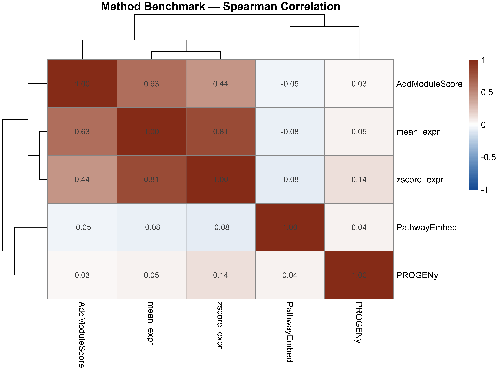
genotype_label <- ifelse(
synthetic_test_metadata[cells, "genotype"] == "Mutant", 1L, 0L
)
compute_auroc <- function(scores, labels) {
r <- roc(labels, scores, quiet = TRUE)
auc_val <- as.numeric(auc(r))
if (auc_val < 0.5) auc_val <- 1 - auc_val
auc_val
}
auroc_results <- data.frame(
Method = colnames(benchmark_df),
AUROC = sapply(benchmark_df, compute_auroc, labels = genotype_label)
)
auroc_results <- auroc_results[order(-auroc_results$AUROC), ]
print(auroc_results)
#> Method AUROC
#> zscore_expr zscore_expr 0.755310
#> PROGENy PROGENy 0.656320
#> mean_expr mean_expr 0.626260
#> PathwayEmbed PathwayEmbed 0.619310
#> AddModuleScore AddModuleScore 0.526651
compute_cohens_d_method <- function(scores, metadata, group_col) {
scores <- setNames(as.numeric(scores), names(scores))
pd <- PreparePlotData(metadata, scores, group = group_col)
pct <- CalculatePercentage(pd, group_var = group_col)
abs(pct$cohens_d[1])
}
cohens_d_results <- data.frame(
Method = colnames(benchmark_df),
Cohens_d = sapply(
colnames(benchmark_df),
function(m) compute_cohens_d_method(
setNames(benchmark_df[[m]], rownames(benchmark_df)),
synthetic_test_metadata, "genotype"
)
)
)
cohens_d_results <- cohens_d_results[order(-cohens_d_results$Cohens_d), ]
print(cohens_d_results)
#> Method Cohens_d
#> zscore_expr zscore_expr 0.94892009
#> mean_expr mean_expr 0.44722384
#> PathwayEmbed PathwayEmbed 0.37911019
#> AddModuleScore AddModuleScore 0.07942301
#> PROGENy PROGENy 0.07087977
method_colors <- c(
"PathwayEmbed" = "#534AB7",
"PROGENy" = "#E24B4A",
"AddModuleScore" = "#EF9F27",
"mean_expr" = "#888780",
"zscore_expr" = "#B4B2A9"
)
p10 <- ggplot(auroc_results, aes(x = reorder(Method, AUROC), y = AUROC, fill = Method)) +
geom_bar(stat = "identity", width = 0.6) +
geom_hline(yintercept = 0.5, linetype = "dashed", color = "black") +
coord_flip() +
scale_fill_manual(values = method_colors) +
labs(title = "AUROC: Mutant vs WT separation by scoring method",
x = NULL, y = "AUROC") +
ylim(0, 1) +
theme_classic() +
theme(legend.position = "none",
axis.text.y = element_text(size = 12),
axis.text.x = element_text(size = 11),
axis.title.x = element_text(size = 12),
plot.title = element_text(size = 13, face = "bold"))
p11 <- ggplot(cohens_d_results, aes(x = reorder(Method, Cohens_d), y = Cohens_d, fill = Method)) +
geom_bar(stat = "identity", width = 0.6) +
geom_hline(yintercept = 0.5, linetype = "dashed", color = "black") +
coord_flip() +
scale_fill_manual(values = method_colors) +
labs(title = "Cohen's d: Mutant vs WT separation by scoring method",
x = NULL, y = "Cohen's d") +
ylim(0, 1) +
theme_classic() +
theme(legend.position = "none",
axis.text.y = element_text(size = 12),
axis.text.x = element_text(size = 11),
axis.title.x = element_text(size = 12),
plot.title = element_text(size = 13, face = "bold"))
p10; p11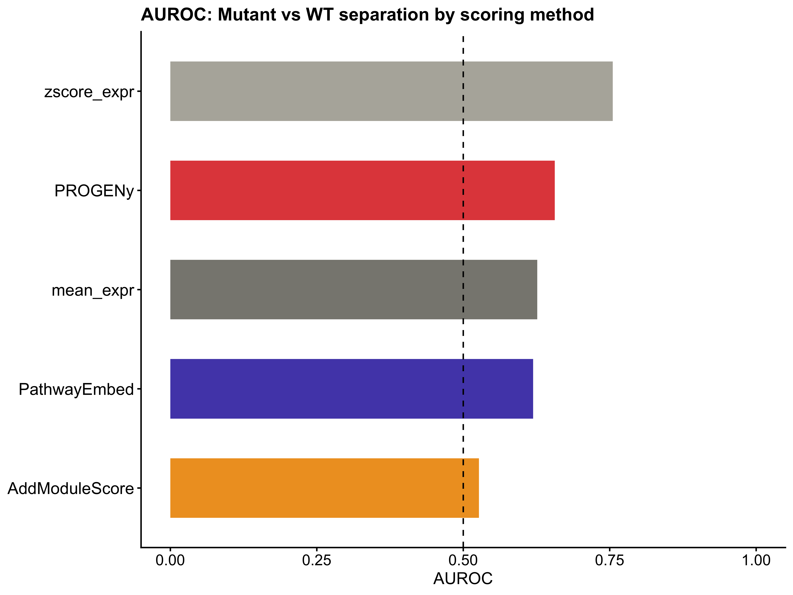
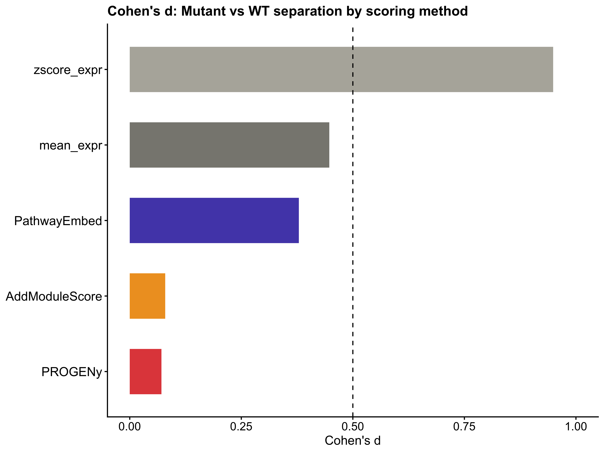
Sensitivity Analysis 2 — Effect of Distance Method
score_manhattan <- ComputeCellData(matrix_24h, pathwaystat_24h,
distance.method = "manhattan")
score_euclidean <- ComputeCellData(matrix_24h, pathwaystat_24h,
distance.method = "euclidean")
cor_dist <- cor(score_manhattan, score_euclidean, method = "spearman")
cat("Spearman correlation (manhattan vs euclidean):", round(cor_dist, 3), "\n")
#> Spearman correlation (manhattan vs euclidean): 0.942
plotdata_manhattan <- PreparePlotData(synthetic_test_metadata, score_manhattan,
group = "genotype")
plotdata_euclidean <- PreparePlotData(synthetic_test_metadata, score_euclidean,
group = "genotype")
pct_manhattan <- CalculatePercentage(plotdata_manhattan, group_var = "genotype")
pct_euclidean <- CalculatePercentage(plotdata_euclidean, group_var = "genotype")
distance_comparison <- data.frame(
method = c("Manhattan", "Euclidean"),
cohens_d = c(pct_manhattan$cohens_d[1], pct_euclidean$cohens_d[1]),
p_value = c(pct_manhattan$p_value[1], pct_euclidean$p_value[1]),
pct_on_wt = c(pct_manhattan$percentage_on[pct_manhattan$group == "WT"],
pct_euclidean$percentage_on[pct_euclidean$group == "WT"]),
pct_on_mut = c(pct_manhattan$percentage_on[pct_manhattan$group == "Mutant"],
pct_euclidean$percentage_on[pct_euclidean$group == "Mutant"])
)
print(distance_comparison)
#> method cohens_d p_value pct_on_wt pct_on_mut
#> 1 Manhattan -0.3791102 2.479654e-20 40.3 58.7
#> 2 Euclidean -0.4669349 3.968028e-32 38.5 63.9
dist_df <- data.frame(manhattan = as.numeric(score_manhattan),
euclidean = as.numeric(score_euclidean),
row.names = names(score_manhattan))
p_scatter <- ggplot(dist_df, aes(x = manhattan, y = euclidean)) +
geom_point(alpha = 0.4, size = 1.2, color = "#534AB7") +
geom_smooth(method = "lm", color = "#E24B4A", linewidth = 0.8, se = TRUE) +
labs(title = sprintf("Manhattan vs Euclidean (rho = %.3f)", cor_dist),
x = "Manhattan score", y = "Euclidean score") +
theme_minimal()
p_man_plot <- PlotPathway(plotdata_manhattan, "Wnt 24h — Manhattan",
"genotype", c("#ae282c", "#2066a8"))
p_euc_plot <- PlotPathway(plotdata_euclidean, "Wnt 24h — Euclidean",
"genotype", c("#ae282c", "#2066a8"))
p_scatter / (p_man_plot + p_euc_plot) +
plot_annotation(title = "Sensitivity to Distance Method")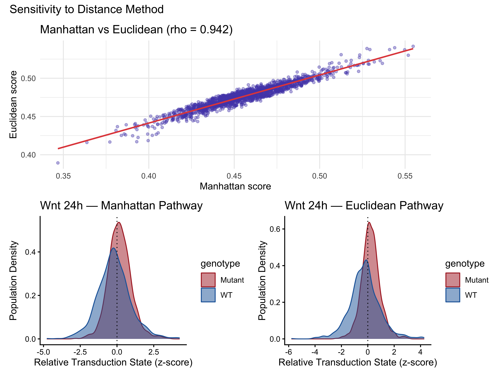